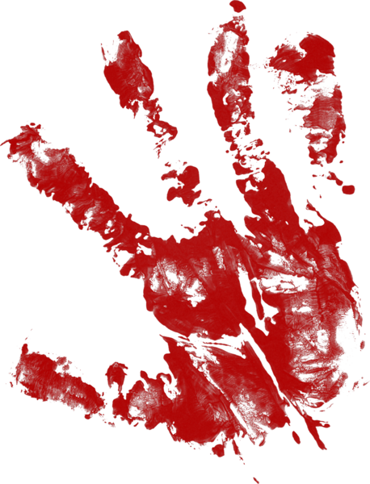
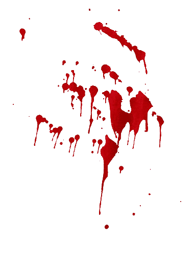
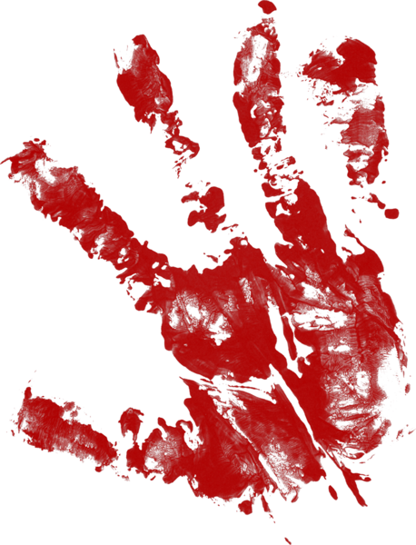
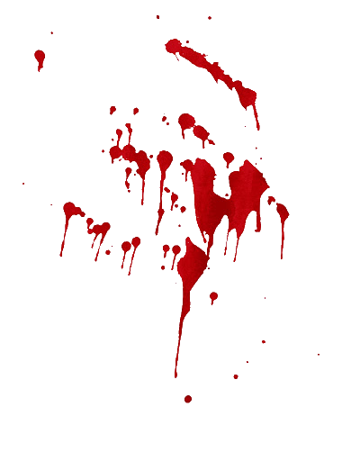

Go to Mussoorie and ask a local the address of Savoy Hotel and you can immediately see the fear in the eyes of the stranger! It is probably one of the most haunted places in Mussoorie that guards some serious secrets in its old walls. So back in 1911, Lady Garnet Orme, a well-known British spiritualist was murdered here. Apparently, she was poisoned with strychnine and suffered a painful slow death.
A few years later, her doctor was murdered too in the same manner and still nobody knows the killer. The mystery remains unsolved and it is believed that the lady lurks in the corridors of the hotel still looking for her murderer. A number of guests have reported incidents such as doors shutting on their own, unknown whispers, and some people also say that they have seen Lady Orme herself.
Constructed in 1825, Mullingar Mansion is the oldest building in the area built by Captain Young, an Irishman commander of the first Sirmoor Battalion. After retiring from his services, he abandoned from the exuberant mansion and left for Ireland.
But did he actually leave? Stated by the local lore, the building is haunted by Captain Young’s spirit. They have witnessed a rider on the grounds of this mansion. Once built with love, the place is lifeless and left to rot. Some do not believe this story but the ones who do keep this place at bay.
On the outskirt of the city, a place that is deserted without any single soul around this place, the sight of the Lambi Dehar Mines is sure to send chill down your spine. Once a limestone mine, this place has a spooky story and as testament to the legend a mind boggling 50,000 deaths have been reported here.
It is said that the mine did not follow any safety regulations and the workers died a painful death coughing blood and the souls of the dead is said to be haunting this place sending out loud noises of shrieks and screams after the sun sets. Many horror movies and TV episodes have been shot here.
Pari Tibba or Hill of Fairies is quite an infamous spot in Mussoorie and for obvious reasons. The place finds its mention in several Ruskin Bond books.
Located close to the renowned Woodstock School, the hill is for some unexplained reasons quite prone to lightning strikes and paranormal activities. Locals tell a tale of two lovers who died right inside the woods of the hills, and now they haunt the place. It is not advised to go inside the woods after the sun goes down.